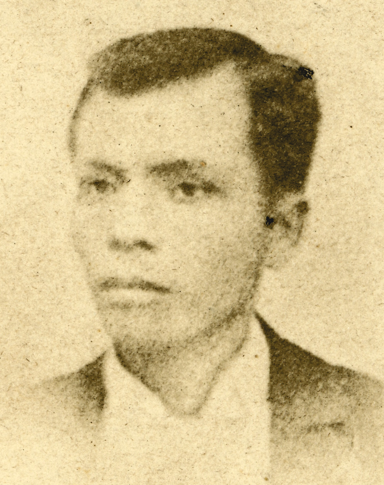
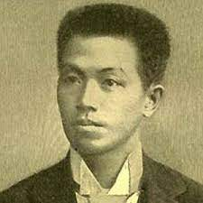

| Image | Name | Birthplace | Birthday | +info | links |
|---|---|---|---|---|---|
 |
Jose Rizal | Calamba, Laguna | June 19, 1861 | Rizal travelled extensively and learned many languages. He had a wide range of interests, including science, and was also a poet, artist and sculptor. Rizal’s first job was with a leading oculist in Paris, France. | click here |
|  | Andres Bonifacio | Tondo, Manila | Nov. 30, 1863 | Bonifacio was a Philippine patriot, founder and leader of nationalist Katipunan society, who instigated the revolt of August 1896 against the Spanish. | click here |
|  | Emilio Aguinaldo | Cavite | March 22/23, 1869 | He was a Filipino leader and politician who fought first against Spain and later against the United States for the independence of the Philippines. | click here |
 |
Marcelo Del Pilar | San Nicolas, Bulacan | August 30, 1850 | He grew up to be one of the greatest propagandists who sought Philippine freedom through his pen. In 1882, he became editor of the newspaper Diariong Tagalog which strongly criticized the way the Spaniards ran the government and treated the people. | click here |
 |
Juan Luna | Badoc, Ilocos Norte | October 23, 1857 | In 1881 Luna’s paintings were shown for the first time abroad at an annual exhibition in Madrid called Exposicion Nacional de Bellas Artes. His La Muerte de Cleopatra took a silver medal and established his artistic career. | click here |